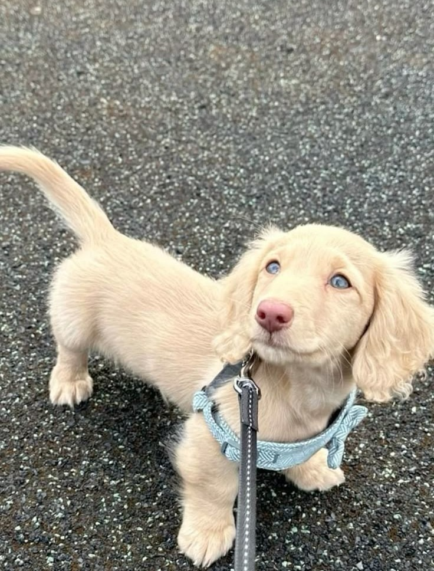
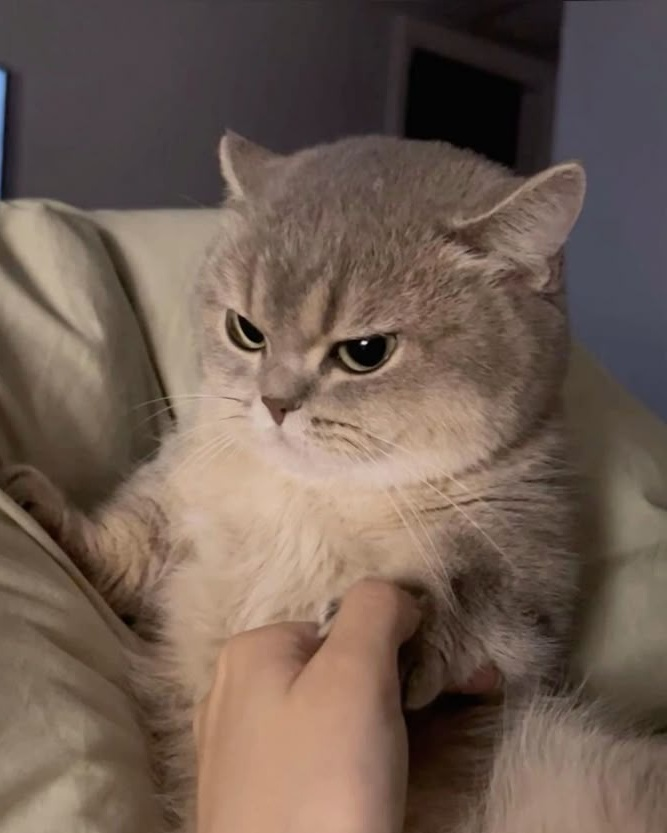

A literal Disney character trapped in a puppy's body. Look at that face in the image. Biscuit knows exactly how cute he is, and he is not afraid to use it to his advantage. With those striking blue eyes and that proud little tail up in the air, he's ready to strut right into your heart (and probably your bed). He enjoys short walks on his tiny legs, long naps, and being told how handsome he is at least 47 times a day.

He looks like he hates you, but he actually just has Resting Cat Face. Don't let the permanent scowl in the given image fool you; Barnaby is actually a sweet guy who happens to look like a tiny, fluffy judge delivering a life sentence. He is looking for a quiet home where he can judge your outfit choices from afar and occasionally grace you with a purr. Excellent listener, terrible at hiding his emotions.